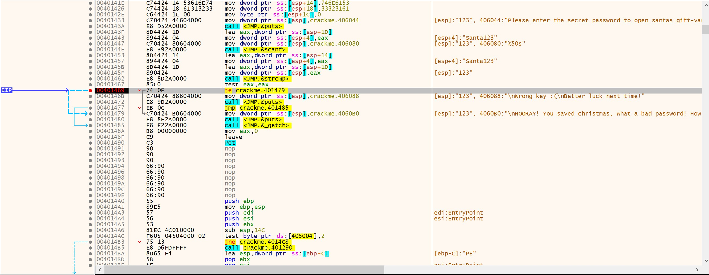
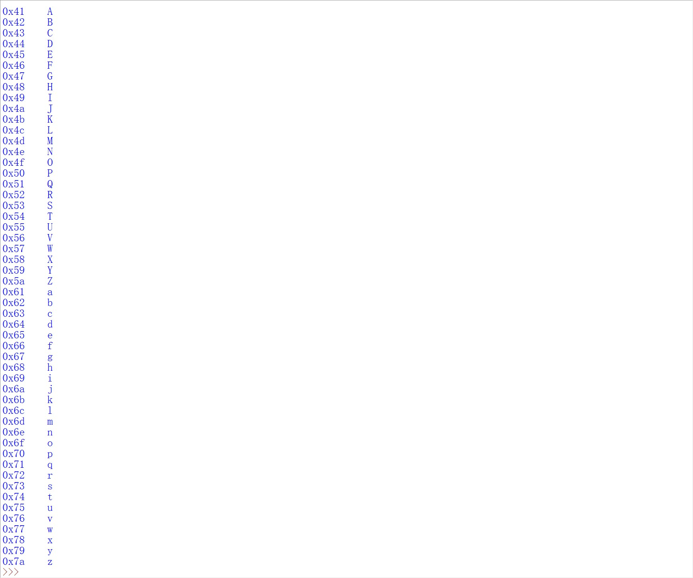

作为一个逆向菜鸟的练习
zun1 crackme
程序功能 打开后提示输入账号密码
动态
定位到报错字符串，字符串前有一个函数判断，下个断点看看
jne了一个函数，jne是判断ZF是否等于1，为0时跳转
用户名随便输了123123，zf为0了。这时rsp为123123，123123被压入了栈顶，但是rcx是什么，为什么是234234？
其实此时可以猜到234234是密码，试了一下确实是密码。密码就是根据用户名按字符加1。
仔细看看这个程序流程
call crackme.4010F8
cmp eax,0x0
jne crackme.401249
crackme.401249 是判断，那么crackme.4010F8函数可能就是密码生成的逻辑。 crackme.4010F8详情如下
push rbp
mov rbp,rsp
sub rsp,0x20
//函数序言
mov qword ptr ss:[rbp+0x10],rcx
mov qword ptr ss:[rbp+0x18],rdx
//fastcall中rcx和rdx是传入函数的两个参数，一个是用户名一个是密码，全压栈了
mov rax,qword ptr ss:[rbp+0x10]
mov r10,rax
mov rcx,r10
//用户名一层层最后给了rcx
call crackme.401048
//又调用了一个函数，这应该是计算密码的函数
mov rcx,qword ptr ss:[rbp+0x18]
//算完后把密码赋给了rcx
mov r11,rcx
mov r10,rax
mov rcx,r10
mov rdx,r11
//用户名给了rcx，密码给了rdx
call <JMP.&strcmp>
//strcmp字符串比较函数
cmp eax,0x0
jne crackme.401142
mov eax,0x0
jmp crackme.401147
mov eax,0x1
leave
ret
详细看看crackme.401048中密码怎么算的
push rbp
mov rbp,rsp
sub rsp,0x30
//函数序言
mov qword ptr ss:[rbp+0x10],rcx
mov rax,qword ptr ss:[rbp+0x10]
mov r8,rax
//用户名给了[rbp+0x10]、rax、r8
mov eax,0x20
//eax为0x20
mov r11,rax
//r11为用户名
lea rax,qword ptr ds:[0x402220]
//给了rax一个地址0x402220
mov r10,rax
mov rcx,r10
mov rdx,r11
//rcx是地址0x402220，rdx是用户名
call <JMP.&strcpy_s>
//调用strcpy_s函数复制字符串。用户名复制到了[0x402220]
cmp eax,0x0
// 置0
je crackme.401096
// 跳转了
lea rax,qword ptr ds:[0x402004]
mov r10,rax
mov rcx,r10
call crackme.401000
//strcpy_s错误时的判断
mov eax,0x0
//crackme.401096跳到这里了
mov dword ptr ss:[rbp-0x4],eax
//eax分配给了rbp-0x4
lea rax,qword ptr ds:[0x402220]
//给了rax一个地址0x402220，也就是用户名的地址
mov r10,rax
mov rcx,r10
//最后给了rcx
call <JMP.&strlen>
//strlen计算rcx长度，计算用户名长度,返回值从rax传出
mov ecx,dword ptr ss:[rbp-0x4]
movsxd rcx,ecx
//ecx扩展到rcx，rcx为0了
cmp rcx,rax
//比较用户名长度是不是0，对标志位产生影响
第一次循环，rcx变为223

第二次循环
第三次循环........
循环体中用地址0x402220存储计算的值，用以下指令
lea rcx,qword ptr ds:[0x402220]
add rcx,rax
movsx eax,byte ptr ds:[rcx]
...
add eax,0x1
来逐字节地进行加1。
巧妙地将地址赋给寄存器后加上1，从而实现逐字节的功能。
怎么实现的？
比如说 [0x402220] 的地址指向 0x313233的值。地址加1后变成了[0x402221]，0x313233变成了0x323300。就是说将第一个字节移除了
用户名长度就是循环次数，循环完成后，把值传给rax。
接着使用strcmp来比较计算前和计算后的值
000000000040111A | 48:8B4D 18 | mov rcx,qword ptr ss:[rbp+0x18] | 提取rbp+0x18的值到rcx，就是原始用户名
000000000040111E | 49:89CB | mov r11,rcx | rcx:"234"
0000000000401121 | 49:89C2 | mov r10,rax | r10:"234"
0000000000401124 | 4C:89D1 | mov rcx,r10 | rcx:"234", r10:"234"
0000000000401127 | 4C:89DA | mov rdx,r11 |
000000000040112A | E8 B1020000 | call <JMP.&strcmp> | 比较rcx和rdx，原始用户名和计算后的值
相同时rax为0，不同时rax为1，接着将eax与0比较，弹出响应的提示。 修改最后的rax值可以强制正确。
静态
入口函数
void __noreturn start()
{
int v0; // eax
int v1; // [rsp+4Ch] [rbp-4h] BYREF
v1 = 0;
_set_app_type(_crt_console_app); //设置程序的启动模式，console或gui
controlfp(0x10000u, 0x30000u); //设置浮点数的控制模式
_getmainargs(*(_QWORD *)&_argc, _argv, environ, (unsigned int)dword_402240, &v1);
// 获取参数和环境变量
v0 = sub_401149((unsigned int)_argc, _argv, environ);
exit(v0);
}
那么sub_401149函数就是主函数了，反编译如下
__int64 sub_401149()
{
FILE *v0; // rax 文件结构体指针
FILE *v1; // rax 文件结构体指针
char Str[32]; // [rsp+20h] [rbp-40h] BYREF
char Buffer[32]; // [rsp+40h] [rbp-20h] BYREF
printf("type in the username: ");
v0 = _iob_func();
fgets(Buffer, 32, v0); //从输入中读取，并存储到Buffer
Buffer[strcspn(Buffer, Control)] = 0; //截断字符以\0
printf("type in the password: ");
v1 = _iob_func();
fgets(Str, 32, v1);
Str[strcspn(Str, asc_402045)] = 0;
//同上
if ( (unsigned int)sub_4010F8(Buffer, Str) )
printf("wrong!");
else
printf("correct!");
return 0i64;
}
程序的逻辑判断在sub_4010F8函数中，传入了Buffer(用户名)和Str(密码)反编译如下
_BOOL8 __fastcall sub_4010F8(__int64 a1, const char *a2)
{
const char *v2; // rax
v2 = (const char *)sub_401048(a1);
return strcmp(v2, a2) != 0;
}
一个bool类型函数，接受2个参数。把经过sub_401048函数计算的a1(用户名)赋给了v2，然后按字符串比较v2和a2是否为0。相同时返回false，不同返回true。
那sub_401048就是计算密码的函数了。
char *__fastcall sub_401048(const char *a1)
{
int i; // [rsp+2Ch] [rbp-4h]
if ( strcpy_s(Str, 0x20ui64, a1) ) //用户名复制到str，复制成功时
sub_401000(aStrcpySFailed);
for ( i = 0; i < strlen(Str); ++i )
++Str[i];
return Str;
}
又出现了一个新函数sub_401000，看起来就是输出用户名，然后退出程序。
当strcpy_s复制失败时会返回非0值，从而进入if体执行sub_401000。正常情况是不会进入if的。
void __fastcall __noreturn sub_401000(const char *a1)
{
printf("%s\n", a1);
exit(1);
}
接下来是一个for循环，根据str的长度来定义循环次数，每次循环都会将str数组中的相应元素进行+1，最后返回Str。那么这就是密码的产生方式了
密码生成器
username = input("username：")
password = ""
for char in username:
encrypted_char = chr(ord(char) + 1)
password += encrypted_char
print("password：", password)
Metamorphic crackme
打开程序要求输入key
通过提示的字符串可以快速定位到判断的地方，jne判断了test eax,eax的结果。但是test自身不就是永远等于吗?
可以将jne修改为jmp使其永远跳转到Success. 但作者让写出一个注册机,所以依旧需要分析程序的逻辑。
这个程序用的函数有点多,先看看反汇编看看代码
入口点函数使用返回的方式加载了函数sub_140001154()
__int64 start()
{
unk_14002A0E0 = 0;
return (unsigned int)sub_140001154();
}
这个函数
int __fastcall main(int argc, const char **argv, const char **envp)
{
PVOID v3; // rcx
signed __int64 *v4; // rdx
__int64 v5; // rdx
__int64 v6; // rcx
__int64 v7; // r8
__int64 v8; // r9
__int64 v10; // [rsp+20h] [rbp-50h]
PVOID StackBase; // [rsp+58h] [rbp-18h]
signed __int64 v12; // [rsp+60h] [rbp-10h]
int v13; // [rsp+6Ch] [rbp-4h]
StackBase = NtCurrentTeb()->NtTib.StackBase; //获取栈基址
v13 = 0;
while ( 1 )
{
v3 = StackBase; //栈基址给了v3
v4 = &qword_14002ABB8;
v12 = _InterlockedCompareExchange64(&qword_14002ABB8, (signed __int64)StackBase, 0i64); //确保基址为StackBase
if ( !v12 )
break;
if ( (PVOID)v12 == StackBase )
{
v13 = 1;
break;
}
Sleep(0x3E8u); //sleep 1000
}
if ( unk_14002ABB0 == 1 )
sub_140011F70(31i64);
if ( unk_14002ABB0 )
{
dword_14002A024 = 1;
}
else
{
unk_14002ABB0 = 1;
initterm(&qword_14002C018, qword_14002C028);
}
if ( unk_14002ABB0 == 1 )
{
initterm(&qword_14002C000, &qword_14002C010);
unk_14002ABB0 = 2;
}
//上面都是关于IO流的
if ( !v13 )
{
v10 = 0i64;
v4 = (signed __int64 *)_InterlockedExchange64(&qword_14002ABB8, 0i64);
} //这里的判断只有2个参数，将qword_14002ABB8替换为了0i64，并且v4是qword_14002ABB8原始值
if ( TlsCallback_0 )
TlsCallback_0(0i64, 2i64, 0i64);
//设置了TLScallback
sub_140002FD8(v3, v4);
qword_14002A120 = (__int64)SetUnhandledExceptionFilter((LPTOP_LEVEL_EXCEPTION_FILTER)&loc_140003120);
set_invalid_parameter_handler(Handler);
sub_1400027D0(v6, v5, v7, v8, v10);
sub_14000147C((unsigned int)dword_14002A004, &qword_14002A008);
sub_140002567();
*(_QWORD *)off_140023120 = qword_14002A010;
Code = sub_1400122A0((unsigned int)dword_14002A004, qword_14002A008, qword_14002A010);
if ( !dword_14002A020 )
exit(Code);
if ( !dword_14002A024 )
cexit();
return Code;
}
碰到一个函数
if ( unk_14002ABB0 == 1 )
sub_140011F70(31i64);
void __fastcall __noreturn sub_140011F70(unsigned int a1)
{
FILE *v1; // rax
v1 = _acrt_iob_func(2u);
sub_140011DB0(v1, "runtime error %d\n", a1);
exit(255);
}
__int64 sub_140011DB0(FILE *a1, const char *a2, ...)
{
va_list va; // [rsp+60h] [rbp+20h] BYREF
va_start(va, a2);
return (unsigned int)_stdio_common_vfprintf(0i64, a1, a2, 0i64, va);
}
大概是判断IO流的代码。
__int64 sub_140002FD8()
{
__int64 result; // rax
void *v1; // rsp
char v2; // [rsp+20h] [rbp-10h] BYREF
int v3; // [rsp+2Ch] [rbp-4h]
result = (unsigned int)dword_14002A0FC;
if ( !dword_14002A0FC )
{
dword_14002A0FC = 1;
v3 = sub_14000387B();
v1 = alloca(sub_140003B00()); //分配栈空间，4k对齐
qword_14002A0F0 = (__int64)&v2;
dword_14002A0F8 = 0;
sub_140002C4E(&unk_1400263F0, &unk_1400263F0, off_1400251F0);
return sub_140002B2F();
}
return result;
}
__int64 sub_14000387B()
{
if ( (unsigned int)sub_140003650(off_1400251F0) )
return *(unsigned __int16 *)((char *)off_1400251F0 + *((int *)off_1400251F0 + 15) + 6);
else
return 0i64;
}
_BOOL8 __fastcall sub_140003650(__int64 a1)
{
__int64 v2; // [rsp+10h] [rbp-10h]
if ( *(_WORD *)a1 != 23117 )
return 0i64;
v2 = *(int *)(a1 + 60) + a1; //v2等于23117+60+23117 = 46294
return *(_DWORD *)v2 == 17744 && *(_WORD *)(v2 + 24) == 523;
}
关键函数
__int64 sub_1400122A0()
{
__int64 v1[3]; // [rsp+20h] [rbp-D8h] BYREF
__int64 v2; // [rsp+38h] [rbp-C0h] BYREF
char v3[184]; // [rsp+40h] [rbp-B8h] BYREF
sub_140002567();
printf("Input Key:\n");
v1[1] = 0xFFEEDDCCBBAA9988ui64;
v1[0] = 0x7766554433221100i64;
sub_140001C70(v1, v3);
sub_140001720("%llu", &v2);
if ( (unsigned int)sub_140001760(v3, v2) )
printf("Success!\n");
else
printf("Fail\n");
return 0i64;
}
用于判断的函数，返回了一个地址
__int64 __fastcall sub_140001760(__int64 a1, __int64 a2)
{
char *v4; // rbx
__int64 v5; // r13
char *v6; // rcx
DWORD *v7; // rax
__int64 (__fastcall *Address[60])(__int64, __int64); // [rsp+20h] [rbp-218h] BYREF
char v10; // [rsp+200h] [rbp-38h] BYREF
qmemcpy(Address, &unk_140024068, sizeof(Address));
v4 = (char *)Address;
v5 = sub_1400024A0();
do
{
v6 = v4;
v4 += 16;
sub_140001B40(v6, a1);
}
while ( v4 != &v10 );
v7 = (DWORD *)malloc(8ui64);
VirtualProtect(Address, 0x1E0ui64, 0x40u, v7);
return Address[0](a2 ^ 0x11223344332211i64, v5);
}
这个加密程序从头到尾都是拿地址进行计算，且似乎有一个密钥自定义了一个算法用于加密。
这题对于一个初学者而言似乎有些超纲。
在https://github.com/forentfraps/metamorphic-crackme/找到了疑似的源代码
objectiveSquid's Christmas Crackme
程序界面
把密码拿出来和输入比较了，直接可以看到明文密码 
反汇编看源代码过于简单
int __cdecl main(int argc, const char **argv, const char **envp)
{
char Str2[9]; // [esp+14h] [ebp-3Ch] BYREF
char Str1[51]; // [esp+1Dh] [ebp-33h] BYREF
__main();
strcpy(Str2, "Santa123");
puts("Please enter the secret password to open santas gift-vault:");
scanf("%50s", Str1);
if ( !strcmp(Str1, Str2) )
puts("\nHOORAY! You saved christmas, what a bad password! How could he have forgotten it??");
else
puts("\nWrong key :(\nBetter luck next time!");
_getch();
return 0;
}
hellokittyfan47's hellokittyfan's crackme
这个程序没有错误提示，找字符串也没有正确提示。
作者说正确格式是10个数字
int __fastcall main(int argc, const char **argv, const char **envp)
{
int *v3; // rax
int *v4; // rbx
const char *v5; // rdi
int v6; // eax
char *v7; // rcx
char *EndPtr; // [rsp+20h] [rbp-48h] BYREF
__int16 v10[4]; // [rsp+28h] [rbp-40h] BYREF
char *String_input[2]; // [rsp+30h] [rbp-38h] BYREF
__int64 v12; // [rsp+40h] [rbp-28h]
unsigned __int64 v13; // [rsp+48h] [rbp-20h]
*(_OWORD *)String_input = 0i64;
v12 = 0i64;
v13 = 15i64;
LOBYTE(String_input[0]) = 0;
do
{
do
{
print(std::cout, (__int64)"Enter your key: ");
scanf(std::cin, String_input);
}
while ( !(unsigned __int8)sub_140001290((char *)String_input) );
v3 = errno();
v4 = v3;
v5 = (const char *)String_input;
if ( v13 >= 0x10 )
v5 = String_input[0];
*v3 = 0;
v6 = strtol(v5, &EndPtr, 10);
if ( v5 == EndPtr )
{
std::_Xinvalid_argument("invalid stoi argument");
JUMPOUT(0x1400014ACi64);
}
if ( *v4 == 34 )
{
std::_Xout_of_range("stoi argument out of range");
__debugbreak();
}
}
while ( ~(((2 * v6) >> 20) & 0xFFFFFF80 ^ 0x269A) != 9573 || !v6 );
LODWORD(EndPtr) = 1685024615;
qmemcpy(v10, "job", 3);
print(std::cout, (__int64)&EndPtr);
print(std::cout, (__int64)v10);
if ( v13 >= 0x10 )
{
v7 = String_input[0];
if ( v13 + 1 >= 0x1000 )
{
v7 = (char *)*((_QWORD *)String_input[0] - 1);
if ( (unsigned __int64)(String_input[0] - v7 - 8) > 0x1F )
invalid_parameter_noinfo_noreturn();
}
j_j_free(v7);
}
return 0;
}
sub_140001290函数，是一个判断，跟运算逻辑无关
char __fastcall sub_140001290(char *String)
{
int *v2; // rax
int *v3; // rdi
char *EndPtr; // [rsp+20h] [rbp-28h] BYREF
v2 = errno();
v3 = v2;
if ( *((_QWORD *)String + 3) >= 0x10ui64 )
String = *(char **)String;
*v2 = 0;
strtol(String, &EndPtr, 10);
if ( String == EndPtr )
std::_Xinvalid_argument("invalid stoi argument");
if ( *v3 == 34 )
std::_Xout_of_range("stoi argument out of range");
return 1;
}
loc_140001360 这是while循环的一部分，调用了sub_140001620、sub_1400017F0和sub_140001290 函数，这都是对输入的检测
loc_140001360:
lea rdx, aEnterYourKey ; "Enter your key: "
mov rcx, cs:?cout@std@@3V?$basic_ostream@DU?$char_traits@D@std@@@1@A ; std::basic_ostream<char,std::char_traits<char>> std::cout
call sub_140001620
lea rdx, [rsp+68h+String]
mov rcx, cs:?cin@std@@3V?$basic_istream@DU?$char_traits@D@std@@@1@A ; std::basic_istream<char,std::char_traits<char>> std::cin
call sub_1400017F0
lea rcx, [rsp+68h+String] ; String
call sub_140001290
test al, al
jz short loc_140001360
继续往下可以跟到这片代码，经过一系列运算，ecx和2565h比较后根据跳转是否重回循环。
lea ecx, [rax+rax] //相当于x2
sar ecx, 14h //右移20位
and ecx, 0FFFFFF80h //与0x0FFFFFF80 and计算
xor ecx, 269Ah //与0x269A xor计算
not ecx //非计算
cmp ecx, 2565h
jnz loc_140001360
所以反推到原始值就是正确的key。
- not 2565h ，得到0xffffda9a
- 0xffffda9a xor 0x269A，得到 0xfffffc00
- 这里and就有点麻烦了，因为原始值的低位可能有1
0位可能是1，在与0x0FFFFFF80 and后为0。
for i in range(1, 10000000000):
tmp = i + i
if (tmp & 0xC0000000 == 0xC0000000) and ((tmp >> 20 & 0xFF) < 0x80):
print(i)
密码不是固定的，能跑出较大的密码范围
saderiek's crackme
main函数
// write access to const memory has been detected, the output may be wrong!
int __cdecl main(int argc, const char **argv, const char **envp)
{
int v3; // eax
int v5; // [esp+Ch] [ebp-1Ch]
v5 = 100;
while ( v5 )
{
print("Enter the pass: ");
sub_401430("%14s", aBcbHbnJa1qw);
sub_401190();
if ( v3 )
v5 = 0;
else
dword_414160 = 1;
}
return 0;
}
.data:0041B001 aPbBfbwfjb12 db 'Pb@#bfbwfjb12',0
.data:0041B00F align 10h
.data:0041B010 byte_41B010 db 6Ah ; DATA XREF: sub_401130+3A↑w
.data:0041B010 ; sub_401130+4A↑w ...
.data:0041B011 aU129 db '*u@129',0
.data:0041B018 byte_41B018 db 30h ; DATA XREF: sub_401190+CE↑w
.data:0041B018 ; sub_401190+DE↑w ...
.data:0041B019 aIDswq db 'i#Dswq',0
.data:0041B020 aBcbHbnJa1qw db 'bcb&*hbn,ja1qw',0
int sub_401430(const char *a1, ...)
{
int v1; // eax
va_list va; // [esp+14h] [ebp+Ch] BYREF
va_start(va, a1);
v1 = sub_403CAC(0);
return sub_401400(v1, a1, 0, va);
}
循环loc_40136D
主体循环
.text:0040136D loc_40136D: ; CODE XREF: _main:loc_4013CE↓j
.text:0040136D cmp [ebp+var_1C], 0
.text:00401371 jz short loc_4013D0
.text:00401373 push offset aEnterThePass ; "Enter the pass: "
.text:00401378 call sub_403DEA
.text:0040137D add esp, 4
.text:00401380 push offset aBcbHbnJa1qw ; "bcb&*hbn,ja1qw"
.text:00401385 push offset a14s ; "%14s"
.text:0040138A call sub_401430
.text:0040138F add esp, 8
.text:00401392 mov [ebp+ms_exc.registration.TryLevel], 0
.text:00401399 call sub_401190
.text:0040139E test eax, eax
.text:004013A0 jz short loc_4013AB
.text:004013A2 mov [ebp+var_1C], 0
.text:004013A9 jmp short loc_4013B5
.text:004013AB ; ---------------------------------------------------------------------------
.text:00401371 jz short loc_4013D0
这是正确时的跳转，跳到loc_4013D0
.text:004013D0 loc_4013D0: ; CODE XREF: _main+31↑j
.text:004013D0 xor eax, eax
.text:004013D2 mov ecx, [ebp+ms_exc.registration.Next]
.text:004013D5 mov large fs:0, ecx
.text:004013DC pop edi
.text:004013DD pop esi
.text:004013DE pop ebx
.text:004013DF mov esp, ebp
.text:004013E1 pop ebp
.text:004013E2 retn
.text:004013E2 _main endp
输入密码后第一个调的函数函数sub_403DEA
.text:00403DEA sub_403DEA proc near ; CODE XREF: sub_401190+65↑p
.text:00403DEA ; sub_401190+136↑p ...
.text:00403DEA
.text:00403DEA var_20 = dword ptr -20h
.text:00403DEA var_1C = dword ptr -1Ch
.text:00403DEA var_18 = dword ptr -18h
.text:00403DEA var_14 = dword ptr -14h
.text:00403DEA var_10 = dword ptr -10h
.text:00403DEA var_C = dword ptr -0Ch
.text:00403DEA var_8 = dword ptr -8
.text:00403DEA var_1 = byte ptr -1
.text:00403DEA arg_0 = dword ptr 8
.text:00403DEA
.text:00403DEA mov edi, edi
.text:00403DEC push ebp
.text:00403DED mov ebp, esp
.text:00403DEF sub esp, 20h
.text:00403DF2 cmp [ebp+arg_0], 0
.text:00403DF6 jnz short loc_403E0D
.text:00403DF8 call sub_40A2BB
.text:00403DFD mov dword ptr [eax], 16h
.text:00403E03 call sub_40A1FE
.text:00403E08 or eax, 0FFFFFFFFh
.text:00403E0B leave
.text:00403E0C retn
.text:00403E0D ; ---------------------------------------------------------------------------
第二个调的函数sub_401430
text:00401430 sub_401430 proc near ; CODE XREF: _main+4A↑p
.text:00401430
.text:00401430 var_8 = dword ptr -8
.text:00401430 var_4 = dword ptr -4
.text:00401430 arg_0 = dword ptr 8
.text:00401430 arg_4 = byte ptr 0Ch
.text:00401430
.text:00401430 push ebp
.text:00401431 mov ebp, esp
.text:00401433 sub esp, 8
.text:00401436 lea eax, [ebp+0Ch]
.text:00401439 mov [ebp-4], eax
.text:0040143C mov ecx, [ebp-4]
.text:0040143F push ecx
.text:00401440 push 0
.text:00401442 mov edx, [ebp+8]
.text:00401445 push edx
.text:00401446 push 0
.text:00401448 call sub_403CAC
.text:0040144D add esp, 4
.text:00401450 push eax
.text:00401451 call sub_401400
.text:00401456 add esp, 10h
.text:00401459 mov [ebp-8], eax
.text:0040145C mov dword ptr [ebp-4], 0
.text:00401463 mov eax, [ebp-8]
.text:00401466 mov esp, ebp
.text:00401468 pop ebp
.text:00401469 retn
.text:00401469 sub_401430 endp
winapiadmin's ROT13 crackme
程序界面
关键对比，rax的值固定为0x152A。所以这个key是5418
程序逻辑
__int64 start()
{
int v0; // eax
__int64 v2; // [rsp+28h] [rbp-30h]
char Buffer[32]; // [rsp+38h] [rbp-20h] BYREF
sub_140001220("Enter Key:");
gets_s(Buffer, 9ui64);
v2 = atoi64(Buffer);
sub_1400010C0();
v0 = rand();
sub_140001040(qword_140003000[v0 % 13]);
if ( sub_1400010C0() == v2 )
sub_140001220("Correct!\n");
else
sub_140001220("Please, try again\n");
system("pause");
return 0i64;
}
计算key的关键代码
__int64 sub_1400010C0()
{
int v0; // eax
v0 = rand();
return qword_140003000[sub_140001040(14 * (v0 % 14 + 1)) % 0xDui64];
}
__int64 __fastcall sub_140001040(unsigned __int64 a1)
{
return (16 * ((((a1 >> 4) & 0xF0F0F0F0F0F0F0Fi64) + 13) & 0xF0F0F0F0F0F0F0Fi64)) | ((a1 & 0xF0F0F0F0F0F0F0Fi64) + 13) & 0xF0F0F0F0F0F0F0Fi64;
}
winapiadmin's XOR crackmes
程序界面
关键逻辑
.text:0000000140001135 mov rcx, [rsp+30h]
.text:000000014000113A cmp [rsp+rax+48h], rcx
.text:000000014000113F jnz short loc_14000114F
.text:0000000140001141 lea rcx, aCorrect ; "Correct!\n"
Trappy Crack me
程序界面
搜索字符串，定位到跳转关键位置
这里有两次jne，都跳过了正确提示并且跳往同一个位置。所以这里是有2个条件的判断的。
查看反编译代码，有一个and判断。size == v67 ，这个v67应该就是rbp-0x60处的值
输入1，rbp-0x60栈上的值是5,r8是1。可猜到应该是判断的字符串长度，程序规定key长度是5。

接着比较key的值，程序用了memcmp函数比较第一个参数和第二个参数的前n个字节
int memcmp(const void *s1, const void *s2, size_t n);
memcmp调用如图，无需关心函数实现方式，只需要看rcx、rdx的值。
rcx是第一个参数，为11111，输入的密码
rdx是第二个参数，为+1TP3，正确的密码
r8是比较的字节数。

s4r's heaven.exe
程序界面
定位字符串找到主要函数
将输入的密码作为第一个参数给了strlen，然后将strlen的返回值与0x1d比较。可以知道密码的长度就是0x1d，也就是29。
.text:00000000004015FF mov r8, rax ; Stream
.text:0000000000401602 mov edx, 1Fh ; MaxCount
.text:0000000000401607 lea rax, Buffer
.text:000000000040160E mov rcx, rax ; Buffer
.text:0000000000401611 call fgets
.text:0000000000401616 lea rax, Buffer
.text:000000000040161D mov rcx, rax ; Str
.text:0000000000401620 call strlen
.text:0000000000401625 mov [rbp-4], eax
.text:0000000000401628 cmp dword ptr [rbp-4], 1Dh
.text:000000000040162C jz short loc_401635
.text:000000000040162E call sub_401591 //提示nop流程
.text:0000000000401633 jmp short loc_401667
当密码长度是29时会跳入loc_401635循环
.text:0000000000401635 loc_401635: ; CODE XREF: sub_4015D5+57↑j
.text:0000000000401635 mov eax, [rbp+var_4]
.text:0000000000401638 sub eax, 1
.text:000000000040163B cdqe
.text:000000000040163D lea rdx, Buffer
.text:0000000000401644 mov byte ptr [rax+rdx], 0
.text:0000000000401648 lea rax, Buffer
.text:000000000040164F mov rcx, rax
.text:0000000000401652 call near ptr sub_401670
.text:0000000000401657 test eax, eax
.text:0000000000401659 jz short loc_401662
.text:000000000040165B call sub_4015B3
.text:0000000000401660 jmp short loc_401667
这个循环把输入的密码作为参数给了sub_401670
.text:0000000000401670 sub_401670 proc far ; CODE XREF: sub_4015D5+7D↑p
.text:0000000000401670 push rbp
.text:0000000000401671 mov rbp, rsp
.text:0000000000401674 sub rsp, 8
.text:0000000000401678 lea esi, word_4016D6
.text:000000000040167F lea edi, byte_4016F3
.text:0000000000401686 mov [rsp+8+var_4], 23h ; '#'
.text:000000000040168E call $+5
.text:0000000000401693 pop rdx
.text:0000000000401694 add edx, 8
.text:0000000000401697 mov [rsp], edx
.text:000000000040169A retf
call $+5代表当前地址的指令偏移，即push 当前地址+5，然后跳转到那条指令。
此时rdx是0x40168e + 0x5 = 0x401693。然后又加了8变成0x40169B，最后rsp的地址是0x40169b。 函数最后返回到了0x40169b地址。
sub_40169B是计算密码的逻辑函数。
.text:000000000040169B sub_40169B proc far
.text:000000000040169B xor edx, edx
.text:000000000040169D
.text:000000000040169D loc_40169D: ; CODE XREF: sub_40169B+20↓j
.text:000000000040169D cmp edx, 1Dh
.text:00000000004016A0 jz short loc_4016BE
.text:00000000004016A2 mov al, [rsi]
.text:00000000004016A4 mov bl, r8b
.text:00000000004016A7 xchg ecx, esi
.text:00000000004016A9 mov al, [rsi]
.text:00000000004016AB xchg r9d, esi
.text:00000000004016AE add bl, al
.text:00000000004016B0 xchg edi, esi
.text:00000000004016B2 mov al, [rsi]
.text:00000000004016B4 xchg r15d, esi
.text:00000000004016B7 cmp al, bl
.text:00000000004016B9 jnz short loc_4016C5
.text:00000000004016BB jmp short loc_40169D
.text:00000000004016BE ; ---------------------------------------------------------------------------
.text:00000000004016BE
.text:00000000004016BE loc_4016BE: ; CODE XREF: sub_40169B+5↑j
.text:00000000004016BE mov eax, 1
.text:00000000004016C3 jmp short loc_4016C7
.text:00000000004016C5 ; ---------------------------------------------------------------------------
.text:00000000004016C5
.text:00000000004016C5 loc_4016C5: ; CODE XREF: sub_40169B+1E↑j
.text:00000000004016C5 xor eax, eax
.text:00000000004016C7
.text:00000000004016C7 loc_4016C7: ; CODE XREF: sub_40169B+28↑j
.text:00000000004016C7 push 33h ; '3'
.text:00000000004016C9 call $+5
.text:00000000004016CE pop rdx
.text:00000000004016CF add edx, 6
.text:00000000004016D2 push rdx
.text:00000000004016D3 retf
.text:00000000004016D3 sub_40169B endp ; sp-analysis failed
关键循环逻辑
bool valid_pass(char *Buffer)
{
for (size_t i = 0; i < 29; i++)
if (byte_4016F3[i] != word_4016D6[i] + Buffer[i])
return false;
return true;
}
byte_4016F3和word_4016D6定义
.text:00000000004016D6 dw 3D97h
.text:00000000004016D8 dq 38FC3924A80239B1h, 0C1750C286B32255Ah, 914B0418D7212A24h
.text:00000000004016F3 db 0F9h, 0AFh, 13h, 0B4h, 75h
.text:00000000004016F8 dq 0A68ACC976EA2851Ch, 80999820EE6D9FCAh, 4284BCF6C1657D3Fh
解密代码
char byte_4016F3[] = "\xF9\xAF\x13\xB4\x75\x1C\x85\xA2\x6E\x97\xCC\x8A\xA6\xCA\x9F\x6D\xEE\x20\x98\x99\x80\x3F\x7D\x65\xC1\xF6\xBC\x84";
char word_4016D6[] = "\x97\x3D\xB1\x39\x02\xA8\x24\x39\xFC\x38\x5A\x25\x32\x6B\x28\x0C\x75\xC1\x24\x2A\x21\xD7\x18\x04\x4B\x91\x4E\x07";
for (size_t i = 0; i < 29; i++)
printf("%c", (byte_4016F3[i] - word_4016D6[i]) & 0xff);
majorsopa's crackme0
b函数读取输入
.text:0000000140005FC1 sub rsp, 90h
.text:0000000140005FC8 call __main
.text:0000000140005FCD lea rbx, [rsp+98h+var_6C]
.text:0000000140005FD2 mov rcx, rbx
.text:0000000140005FD5 call b
.text:0000000140001455 b proc near ; CODE XREF: main+15↓p
.text:0000000140001455 push rbx
.text:0000000140001456 sub rsp, 20h
.text:000000014000145A mov rbx, rcx
.text:000000014000145D lea rcx, Format ; "Enter password: "
.text:0000000140001464 call printf
.text:0000000140001469 mov rcx, rbx
.text:000000014000146C add rsp, 20h
.text:0000000140001470 pop rbx
.text:0000000140001471 jmp gets
.text:0000000140001471 b endp
c函数计算输入的字符长度
.text:0000000140005FDA mov rcx, rbx
.text:0000000140005FDD call a
.text:0000000140001447 a proc near ; CODE XREF: e:loc_140001511↓p
.text:0000000140001447 ; main+1D↓p
.text:0000000140001447 ; DATA XREF: ...
.text:0000000140001447 sub rsp, 28h
.text:000000014000144B call strlen
.text:0000000140001450 add rsp, 28h
.text:0000000140001454 retn
.text:0000000140001454 a endp
loc_14000600A循环是失败流程。 当输入的字符小于等于7时失败。表示密码大于等于8
.text:0000000140005FE2 cmp eax, 7
.text:0000000140005FE5 jle short loc_14000600A
al寄存器与1进行and操作，判断al寄存器是否为奇数。如果是奇数则zf设为0，否则为1 jnz当zf位是0时（strlen的返回值是奇数），则失败。所以密码必须是偶数。
.text:0000000140005FE7 test al, 1
.text:0000000140005FE9 jnz short loc_14000600A
接着调用c函数。 当进入loc_14000148D时，返回值设为1，并退出c函数。 函数结束后当返回值为0时，进入失败流程。
.text:0000000140005FEB mov rcx, rbx
.text:0000000140005FEE call c
.text:0000000140001476 c proc near ; CODE XREF: c+11↓j
.text:0000000140001476 ; main+2E↓p
.text:0000000140001476 ; DATA XREF: ...
.text:0000000140001476 mov al, [rcx]
.text:0000000140001478 test al, al
.text:000000014000147A jz short loc_14000148D
.text:000000014000147C and eax, 0FFFFFFDFh
.text:000000014000147F inc rcx
.text:0000000140001482 sub eax, 41h ; 'A'
.text:0000000140001485 cmp al, 19h
.text:0000000140001487 jbe short c
.text:0000000140001489 xor eax, eax
.text:000000014000148B jmp short locret_140001492
.text:000000014000148D
.text:000000014000148D loc_14000148D: ; CODE XREF: c+4↑j
.text:000000014000148D mov eax, 1
.text:0000000140001492
.text:0000000140001492 locret_140001492: ; CODE XREF: c+15↑j
.text:0000000140001492 retn
.text:0000000140001492 c endp
.text:0000000140005FF3 test eax, eax
.text:0000000140005FF5 jz short loc_14000600A
仔细看看这里的小循环
mov al, [rcx] //存储密码的地址给rax低8位；第二次由于rcx地址+1，所以指向下一个密码字符
test al, al //and al，al为0时跳转到loc_14000148D，loc_14000148D是正确流程
jz short loc_14000148D //jump zero ZF=1
and eax, 0FFFFFFDFh //eax 与0xDF and操作
inc rcx //rcx 自加
sub eax, 41h ; 'A' // eax减 0x41，ASCII是A
cmp al, 19h //al与0x19比较是否相等
jbe short c //0x19大于等于al时重复循环
这可能是遍历检测密码字符是否合法的判断
for i in range(0,256):
if ((i & 0xDF) - 0x41) & 0xFF <= 0x19:
print(f'{hex(i)} {chr(i)}')

所以密码组成是大小写的a-z
接下来还有一个e函数，e函数返回非0时程序进入最终的成功提示。
.text:0000000140005FF7 mov rcx, rbx
.text:0000000140005FFA call e
.text:0000000140005FFF lea rcx, aCorrect ; "Correct"
.text:0000000140006006 test eax, eax
.text:0000000140006008 jnz short loc_140006011
.text:000000014000600A
整个e函数包含了大量的循环。
首先e调用了d
.text:00000001400014B7 e proc near ; CODE XREF: main+3A↓p
.text:00000001400014B7 ; DATA XREF: .pdata:000000014000909C↓o ...
.text:00000001400014B7
.text:00000001400014B7 var_4A = byte ptr -4Ah
.text:00000001400014B7
.text:00000001400014B7 push rsi
.text:00000001400014B8 push rbx
.text:00000001400014B9 sub rsp, 68h
.text:00000001400014BD xor esi, esi
.text:00000001400014BF lea r10, [rsp+2Eh]
.text:00000001400014C4 mov rdx, r10
.text:00000001400014C7 call d
d函数如下
.text:0000000140001493 xor eax, eax
.text:0000000140001495
.text:0000000140001495 loc_140001495: ; CODE XREF: d+1E↓j
.text:0000000140001495 mov r8b, [rcx+rax]
.text:0000000140001499 lea r9d, [rax+1]
.text:000000014000149D test r8b, r8b
.text:00000001400014A0 jz short loc_1400014B3
.text:00000001400014A2 and r9b, 1
.text:00000001400014A6 jnz short loc_1400014AE
.text:00000001400014A8 mov [rdx], r8b
.text:00000001400014AB inc rdx
.text:00000001400014AE
.text:00000001400014AE loc_1400014AE: ; CODE XREF: d+13↑j
.text:00000001400014AE inc rax
.text:00000001400014B1 jmp short loc_140001495
.text:00000001400014B3 ; ---------------------------------------------------------------------------
.text:00000001400014B3
.text:00000001400014B3 loc_1400014B3: ; CODE XREF: d+D↑j
.text:00000001400014B3 mov byte ptr [rdx], 0
.text:00000001400014B6 retn
.text:00000001400014B6 d endp
d看起来有些复杂，但是在x64dbg中可以看到d函数通过一系列运算之后返回了偶数位的字符
随后在loc_1400014CF循环中把d函数的返回值按位又进行了运算。
.text:00000001400014CC mov rdx, rcx
.text:00000001400014CF
.text:00000001400014CF loc_1400014CF: ; CODE XREF: e+27↓j
.text:00000001400014CF mov al, [rdx]
.text:00000001400014D1 add rdx, 2
.text:00000001400014D5 test al, al
.text:00000001400014D7 jz short loc_1400014E0
.text:00000001400014D9 and eax, 0Fh
.text:00000001400014DC add esi, eax
.text:00000001400014DE jmp short loc_1400014CF
.text:00000001400014E0 ; ---------------------------------------------------------------------------
.text:00000001400014E0
.text:00000001400014E0 loc_1400014E0: ; CODE XREF: e+20↑j
.text:00000001400014E0 mov rdx, r10
.text:00000001400014E3 xor ebx, ebx
.text:00000001400014E5
随后把密码的奇数位进行了判断，又将奇数位和偶数位进行%运算。复杂的运算逻辑可以直接丢GPT
.text:00000001400014E5 loc_1400014E5: ; CODE XREF: e+58↓j
.text:00000001400014E5 mov al, [rdx]
.text:00000001400014E7 test al, al
.text:00000001400014E9 jz short loc_140001511
.text:00000001400014EB lea r8d, [rax-61h]
.text:00000001400014EF cmp r8b, 5
.text:00000001400014F3 ja short loc_1400014FA
.text:00000001400014F5 sub eax, 57h ; 'W'
.text:00000001400014F8 jmp short loc_140001507
.text:00000001400014FA ; ---------------------------------------------------------------------------
.text:00000001400014FA
.text:00000001400014FA loc_1400014FA: ; CODE XREF: e+3C↑j
.text:00000001400014FA lea r8d, [rax-41h]
.text:00000001400014FE cmp r8b, 5
.text:0000000140001502 ja short loc_140001539
.text:0000000140001504 sub eax, 37h ; '7'
.text:0000000140001507
.text:0000000140001507 loc_140001507: ; CODE XREF: e+41↑j
.text:0000000140001507 movsx eax, al
.text:000000014000150A inc rdx
.text:000000014000150D add ebx, eax
.text:000000014000150F jmp short loc_1400014E5
.text:0000000140001511 ; ---------------------------------------------------------------------------
.text:0000000140001511
.text:0000000140001511 loc_140001511: ; CODE XREF: e+32↑j
.text:0000000140001511 call a
.text:0000000140001516 mov ecx, eax
.text:0000000140001518 lea r8d, [rsi+rax]
.text:000000014000151C add ecx, ebx
.text:000000014000151E cmp esi, ebx
.text:0000000140001520 jge short loc_14000152A
.text:0000000140001522 mov eax, ecx
.text:0000000140001524 cdq
.text:0000000140001525 idiv r8d
.text:0000000140001528 jmp short loc_140001530
.text:000000014000152A ; ---------------------------------------------------------------------------
.text:000000014000152A
.text:000000014000152A loc_14000152A: ; CODE XREF: e+69↑j
.text:000000014000152A mov eax, r8d
.text:000000014000152D cdq
.text:000000014000152E idiv ecx
.text:0000000140001530
.text:0000000140001530 loc_140001530: ; CODE XREF: e+71↑j
.text:0000000140001530 xor eax, eax
.text:0000000140001532 test edx, edx
.text:0000000140001534 setz al
.text:0000000140001537 jmp short loc_14000153B
.text:0000000140001539 ; ---------------------------------------------------------------------------
.text:0000000140001539
.text:0000000140001539 loc_140001539: ; CODE XREF: e+4B↑j
.text:0000000140001539 xor eax, eax
.text:000000014000153B
.text:000000014000153B loc_14000153B: ; CODE XREF: e+80↑j
.text:000000014000153B add rsp, 68h
.text:000000014000153F pop rbx
.text:0000000140001540 pop rsi
.text:0000000140001541 retn
.text:0000000140001541 e endp
有多个解法，但最简单的密码是8个a
Dojas's find the encryptor
搜索不到错误提示，字符被加密了
crackme.401721 是负责加密的函数，调试到这里之后输入的密码进行了加密 123加密成了 49 100 153
代码如下，挺复杂的....
.text:00401721 encode proc near ; CODE XREF: jio(std::string)+92↓p
.text:00401721
.text:00401721 var_68 = dword ptr -68h
.text:00401721 var_64 = dword ptr -64h
.text:00401721 lpuexcpt = dword ptr -60h
.text:00401721 fctx = SjLj_Function_Context ptr -5Ch
.text:00401721 var_38 = dword ptr -38h
.text:00401721 var_34 = dword ptr -34h
.text:00401721 var_1C = byte ptr -1Ch
.text:00401721 var_18 = byte ptr -18h
.text:00401721 var_14 = dword ptr -14h
.text:00401721 var_10 = dword ptr -10h
.text:00401721 var_8 = byte ptr -8
.text:00401721 arg_0 = dword ptr 8
.text:00401721 arg_4 = dword ptr 0Ch
.text:00401721
.text:00401721 push ebp
.text:00401722 mov ebp, esp
.text:00401724 sub esp, 88h
.text:0040172A lea eax, [ebp+var_8]
.text:0040172D mov [ebp+fctx.personality], offset ___gxx_personality_sj0
.text:00401734 mov [ebp+fctx.lsda], offset word_4868B2
.text:0040173B mov [ebp+var_38], offset loc_401838
.text:00401742 mov [ebp+var_34], esp
.text:00401745 mov [ebp+fctx.jbuf], eax
.text:00401748 lea eax, [ebp+fctx]
.text:0040174B mov [esp], eax ; this
.text:0040174E call __Unwind_SjLj_Register
.text:00401753 ; __unwind { // ___gxx_personality_sj0
.text:00401753 ; try {
.text:00401753 mov ecx, [ebp+arg_0]
.text:00401756 mov [ebp+fctx.call_site], 0FFFFFFFFh
.text:0040175D call __ZNSsC1Ev ; std::string::string(void)
.text:00401762 mov eax, [ebp+arg_4]
.text:00401765 mov ecx, [ebp+arg_4]
.text:00401768 mov eax, [eax]
.text:0040176A mov [ebp+lpuexcpt], eax
.text:0040176D call __ZNKSs3endEv ; std::string::end(void)
.text:00401772 mov [ebp+var_68], eax
.text:00401775
.text:00401775 loc_401775: ; CODE XREF: encode+112↓j
.text:00401775 mov edx, [ebp+var_68]
.text:00401778 cmp [ebp+lpuexcpt], edx
.text:0040177B jz loc_40188B
.text:00401781 mov eax, [ebp+lpuexcpt]
.text:00401784 movsx eax, byte ptr [eax]
.text:00401787 mov [ebp+var_64], eax
.text:0040178A mov eax, [ebp+arg_0]
.text:0040178D mov [esp+4], eax
.text:00401791 lea eax, [ebp+var_14]
.text:00401794 mov [esp], eax ; std::string *
.text:00401797 mov [ebp+fctx.call_site], 1
.text:0040179E call __Z2spRKSs ; sp(std::string const&)
.text:004017A3 mov eax, [ebp+var_10]
.text:004017A6 sub eax, [ebp+var_14]
.text:004017A9 sar eax, 2
.text:004017AC inc eax
.text:004017AD imul eax, [ebp+var_64]
.text:004017B1 mov dword ptr [esp+0Ch], offset unk_490000
.text:004017B9 mov dword ptr [esp+8], 10h
.text:004017C1 mov dword ptr [esp+4], offset __ZL9vsnprintfPcjPKcS_ ; char *
.text:004017C9 mov [esp+10h], eax
.text:004017CD lea eax, [ebp+var_1C]
.text:004017D0 mov [esp], eax
.text:004017D3 mov [ebp+fctx.call_site], 2
.text:004017DA call __ZN9__gnu_cxx12__to_xstringISscEET_PFiPT0_jPKS2_PcEjS5_z ; __gnu_cxx::__to_xstring<std::string,char>(int (*)(char *,uint,char const*,char *),uint,char const*,...)
.text:004017DF lea ecx, [ebp+var_1C]
.text:004017E2 mov dword ptr [esp], offset unk_490003 ; this
.text:004017E9 mov [ebp+fctx.call_site], 3
.text:004017F0 call __ZNSs6appendEPKc ; std::string::append(char const*)
.text:004017F5 push ecx
.text:004017F6 lea ecx, [ebp+var_18]
.text:004017F9 mov [esp], eax
.text:004017FC call __ZNSsC1EOSs ; std::string::string(std::string &&)
.text:00401801 lea eax, [ebp+var_18]
.text:00401804 push edx
.text:00401805 mov [esp], eax
.text:00401808 mov ecx, [ebp+arg_0]
.text:0040180B mov [ebp+fctx.call_site], 4
.text:00401812 call __ZNSspLERKSs ; std::string::operator+=(std::string const&)
.text:00401817 lea ecx, [ebp+var_18]
.text:0040181A push eax ; this
.text:0040181B call __ZNSsD1Ev ; std::string::~string()
.text:00401820 lea ecx, [ebp+var_1C]
.text:00401823 call __ZNSsD1Ev ; std::string::~string()
.text:00401828 lea ecx, [ebp+var_14]
.text:0040182B call __ZNSt6vectorISsSaISsEED4Ev_isra_49 ; std::vector<std::string,std::allocator<std::string>>::~vector() [clone]
.text:00401830 inc [ebp+lpuexcpt]
.text:00401833 jmp loc_401775
.text:00401838 ; ---------------------------------------------------------------------------
.text:00401838
.text:00401838 loc_401838: ; DATA XREF: encode+1A↑o
.text:00401838 ; cleanup() // owned by 401753
.text:00401838 add ebp, 8
.text:0040183B mov eax, [ebp+fctx.data]
.text:0040183E mov [ebp+lpuexcpt], eax
.text:00401841 mov eax, [ebp+fctx.call_site]
.text:00401844 test eax, eax
.text:00401846 jz short loc_401871
.text:00401848 dec eax
.text:00401849 jnz short loc_401855
.text:0040184B
.text:0040184B loc_40184B: ; CODE XREF: encode+13F↓j
.text:0040184B lea ecx, [ebp+var_14]
.text:0040184E call __ZNSt6vectorISsSaISsEED4Ev_isra_49 ; std::vector<std::string,std::allocator<std::string>>::~vector() [clone]
.text:00401853 jmp short loc_401871
.text:00401855 ; ---------------------------------------------------------------------------
.text:00401855
.text:00401855 loc_401855: ; CODE XREF: encode+128↑j
.text:00401855 dec eax
.text:00401856 jnz short loc_401862
.text:00401858
.text:00401858 loc_401858: ; CODE XREF: encode+14C↓j
.text:00401858 lea ecx, [ebp+var_1C]
.text:0040185B call __ZNSsD1Ev ; std::string::~string()
.text:00401860 jmp short loc_40184B
.text:00401862 ; ---------------------------------------------------------------------------
.text:00401862
.text:00401862 loc_401862: ; CODE XREF: encode+135↑j
.text:00401862 dec eax
.text:00401863 jnz short loc_40186F
.text:00401865 lea ecx, [ebp+var_18]
.text:00401868 call __ZNSsD1Ev ; std::string::~string()
.text:0040186D jmp short loc_401858
.text:0040186F ; ---------------------------------------------------------------------------
.text:0040186F
.text:0040186F loc_40186F: ; CODE XREF: encode+142↑j
.text:0040186F ud2
.text:00401871 ; ---------------------------------------------------------------------------
.text:00401871
.text:00401871 loc_401871: ; CODE XREF: encode+125↑j
.text:00401871 ; encode+132↑j
.text:00401871 mov ecx, [ebp+arg_0]
.text:00401874 call __ZNSsD1Ev ; std::string::~string()
.text:00401879 mov eax, [ebp+lpuexcpt]
.text:0040187C mov [esp], eax ; lpuexcpt
.text:0040187F mov [ebp+fctx.call_site], 0FFFFFFFFh
.text:00401886 call __Unwind_SjLj_Resume
.text:0040188B ; ---------------------------------------------------------------------------
.text:0040188B
.text:0040188B loc_40188B: ; CODE XREF: encode+5A↑j
.text:0040188B lea eax, [ebp+fctx]
.text:0040188E mov [esp], eax ; lpfctx
.text:00401891 call __Unwind_SjLj_Unregister
.text:00401896 mov eax, [ebp+arg_0]
.text:00401899 leave
.text:0040189A retn
.text:0040189A ; } // starts at 401753
.text:0040189A ; } // starts at 401753
.text:0040189A encode endp
继续调试可知道解密函数
text:0040189B push ebp
.text:0040189C mov ebp, esp
.text:0040189E push ebx
.text:0040189F lea eax, [ebp+var_8]
.text:004018A2 sub esp, 74h
.text:004018A5 mov [ebp+fctx.personality], offset ___gxx_personality_sj0
.text:004018AC mov [ebp+fctx.lsda], offset word_4868BE
.text:004018B3 mov [ebp+fctx.jbuf], eax
.text:004018B6 lea eax, [ebp+fctx]
.text:004018B9 mov [ebp+var_24], esp
.text:004018BC mov [ebp+var_28], offset loc_4019E7
.text:004018C3 mov [esp], eax ; lpfctx
.text:004018C6 call __Unwind_SjLj_Register
.text:004018CB ; __unwind { // ___gxx_personality_sj0
.text:004018CB ; try {
.text:004018CB lea eax, [ebp+var_C]
.text:004018CE mov dword ptr [esp], offset byte_490005 ; char *
.text:004018D5 mov [esp+4], eax ; int
.text:004018D9 mov ecx, [ebp+arg_0]
.text:004018DC mov [ebp+fctx.call_site], 0FFFFFFFFh
.text:004018E3 call __ZNSsC1EPKcRKSaIcE ; std::string::string(char const*,std::allocator<char> const&)
.text:004018E8 push edx
.text:004018E9 push edx ; this
.text:004018EA mov eax, [ebp+arg_4]
.text:004018ED mov eax, [eax+4]
.text:004018F0 mov [ebp+lpuexcpt], eax
.text:004018F3 lea eax, [ebp+var_C]
.text:004018F6 mov [ebp+EndPtr], eax
.text:004018F9
.text:004018F9 loc_4018F9: ; CODE XREF: decode+112↓j
.text:004018F9 mov eax, [ebp+arg_4]
.text:004018FC mov ebx, [ebp+lpuexcpt]
.text:004018FF cmp ebx, [eax]
.text:00401901 jz loc_4019B2
.text:00401907 sub [ebp+lpuexcpt], 4
.text:0040190B mov eax, [ebp+lpuexcpt]
.text:0040190E mov eax, [eax]
.text:00401910 mov [ebp+fctx.call_site], 1
.text:00401917 mov [ebp+String], eax
.text:0040191A call ds:__imp___errno
.text:00401920 mov dword ptr [eax], 0
.text:00401926 mov dword ptr [esp+8], 0Ah ; Radix
.text:0040192E mov eax, [ebp+EndPtr]
.text:00401931 mov [esp+4], eax ; EndPtr
.text:00401935 mov eax, [ebp+String]
.text:00401938 mov [esp], eax ; String
.text:0040193B call _strtol
.text:00401940 mov [ebp+var_58], eax
.text:00401943 mov eax, [ebp+String]
.text:00401946 cmp [ebp+var_C], eax
.text:00401949 jnz short loc_401957
.text:0040194B mov dword ptr [esp], offset aStoi ; "stoi"
.text:00401952 call __ZSt24__throw_invalid_argumentPKc ; std::__throw_invalid_argument(char const*)
.text:00401957 ; ---------------------------------------------------------------------------
.text:00401957
.text:00401957 loc_401957: ; CODE XREF: decode+AE↑j
.text:00401957 mov [ebp+fctx.call_site], 1
.text:0040195E call ds:__imp___errno
.text:00401964 cmp dword ptr [eax], 22h ; '"'
.text:00401967 jz loc_401A0A
.text:0040196D mov eax, [ebp+arg_4]
.text:00401970 mov edx, [eax+4]
.text:00401973 mov eax, [eax]
.text:00401975 mov byte ptr [esp+0Ch], 0
.text:0040197A mov ebx, [ebp+lpuexcpt]
.text:0040197D mov [esp+4], edx ; char
.text:00401981 mov [esp], eax
.text:00401984 mov [esp+8], ebx
.text:00401988 call __ZSt9__find_ifIN9__gnu_cxx17__normal_iteratorIPKSsSt6vectorISsSaISsEEEENS0_5__ops16_Iter_equals_valIS2_EEET_SB_SB_T0_St26random_access_iterator_tag ; std::__find_if<__gnu_cxx::__normal_iterator<std::string const*,std::vector<std::string,std::allocator<std::string>>>,__gnu_cxx::__ops::_Iter_equals_val<std::string const>>(__gnu_cxx::__normal_iterator<std::string const*,std::vector<std::string,std::allocator<std::string>>>,__gnu_cxx::__normal_iterator<std::string const*,std::vector<std::string,std::allocator<std::string>>>,__gnu_cxx::__ops::_Iter_equals_val<std::string const>,std::random_access_iterator_tag)
.text:0040198D mov ebx, [ebp+arg_4]
.text:00401990 sub eax, [ebx]
.text:00401992 sar eax, 2
.text:00401995 lea ecx, [eax+1]
.text:00401998 mov eax, [ebp+var_58]
.text:0040199B cdq
.text:0040199C idiv ecx
.text:0040199E movsx eax, al
.text:004019A1 mov [esp], eax ; this
.text:004019A4 mov ecx, [ebp+arg_0]
.text:004019A7 call __ZNSs9push_backEc ; std::string::push_back(char)
.text:004019AC push eax
.text:004019AD jmp loc_4018F9
.text:004019B2 ; ---------------------------------------------------------------------------
.text:004019B2
.text:004019B2 loc_4019B2: ; CODE XREF: decode+66↑j
.text:004019B2 mov ecx, [ebp+arg_0]
.text:004019B5 mov [ebp+fctx.call_site], 1
.text:004019BC call __ZNSs3endEv ; std::string::end(void)
.text:004019C1 mov ecx, [ebp+arg_0]
.text:004019C4 mov [ebp+lpuexcpt], eax
.text:004019C7 call __ZNSs5beginEv ; std::string::begin(void)
.text:004019CC mov edx, [ebp+lpuexcpt]
.text:004019CF dec edx
.text:004019D0 cmp eax, [ebp+lpuexcpt]
.text:004019D3 jz short loc_401A1D
.text:004019D5
.text:004019D5 loc_4019D5: ; CODE XREF: decode+14A↓j
.text:004019D5 cmp eax, edx
.text:004019D7 jnb short loc_401A1D
.text:004019D9 mov cl, [eax]
.text:004019DB mov bl, [edx]
.text:004019DD inc eax
.text:004019DE dec edx
.text:004019DF mov [eax-1], bl
.text:004019E2 mov [edx+1], cl
.text:004019E5 jmp short loc_4019D5
.text:004019E7 ; ---------------------------------------------------------------------------
.text:004019E7
.text:004019E7 loc_4019E7: ; DATA XREF: decode+21↑o
.text:004019E7 ; cleanup() // owned by 4018CB
.text:004019E7 add ebp, 8
.text:004019EA mov eax, [ebp+fctx.data]
.text:004019ED mov ecx, [ebp+arg_0]
.text:004019F0 mov [ebp+lpuexcpt], eax
.text:004019F3 call __ZNSsD1Ev ; std::string::~string()
.text:004019F8 mov eax, [ebp+lpuexcpt]
.text:004019FB mov [esp], eax ; lpuexcpt
.text:004019FE mov [ebp+fctx.call_site], 0FFFFFFFFh
.text:00401A05 call __Unwind_SjLj_Resume
.text:00401A0A ; ---------------------------------------------------------------------------
.text:00401A0A
.text:00401A0A loc_401A0A: ; CODE XREF: decode+CC↑j
.text:00401A0A mov dword ptr [esp], offset aStoi ; "stoi"
.text:00401A11 mov [ebp+fctx.call_site], 1
.text:00401A18 call __ZSt20__throw_out_of_rangePKc ; std::__throw_out_of_range(char const*)
.text:00401A1D ; ---------------------------------------------------------------------------
.text:00401A1D
.text:00401A1D loc_401A1D: ; CODE XREF: decode+138↑j
.text:00401A1D ; decode+13C↑j
.text:00401A1D lea eax, [ebp+fctx]
.text:00401A20 mov [esp], eax ; lpfctx
.text:00401A23 call __Unwind_SjLj_Unregister
.text:00401A28 mov eax, [ebp+arg_0]
.text:00401A2B mov ebx, [ebp+var_4]
.text:00401A2E leave
.text:00401A2F retn
.text:00401A2F ; } // starts at 4018CB
.text:00401A2F ; } // starts at 4018CB
.text:00401A2F decode endp
来尝试一些bypass的办法，而不直接面对加密算法
找到调用加密字符串的地方下断点
尝试将0x49A024修改为0x49A028，看到程序返回提示变成了正确的提示

注意，这里的地址是栈上的引用地址，原始字符串存储位置不是这个地址
0x49A02C 未知字符串
&"49 98 162 128 250 288 392 256 450 570 539 384 676 756 780 512 901 882 912 640 1134 1144 1288 768 1350 1430 1539 896 1624 1500 1612 1024 1881 1768 1855 1152 1813 1862 2067 1920 1312 2058 2150 2376 2385 1472 2303 2496 2352 2600 1632 2548 2756 3078 2915 1792 3135 2842 3068"
0x49A028 成功提示的字符串
congratulations! you did it successfully!
&"99 222 330 412 570 582 812 936 972 970 1276 1260 1443 1540 1725 528 544 2178 2109 2340 672 2200 2415 2400 800 2730 3132 896 3335 3510 3069 3168 3333 3910 4025 3672 4329 4104 4212 4840 1353"
0x49A024 失败提示的字符串
You made a mistake. Try again!!
&"89 222 351 128 545 582 700 808 288 970 352 1308 1365 1610 1740 1552 1819 1818 874 640 1764 2508 2783 768 2425 2678 2619 2940 3190 990 1023"
0x49A020 pause字符串
&"112 194 351 460 505"
我想知道0x49A02C字符串是什么，当替换为0x49A02C时，输出的不是字符串，似乎还有一层加密
116 208 291 464 510 648 679 824 945 1150 1265 1404 1495 714
定位到存储数据的原始地址。 同样搜索字符串可以看到，没有&的表示原始数据，跟踪到内存就可以找到原始地址
将这段数据替换错误提示的数据。
在程序入口断点时修改内存数据，再运行。
这时可以看到字符串二次解密为了thatflagissus3
这就是密码
aname's messy crackme
程序界面，提示输入id和密码 直接搜索字符串，可看到疑似用户名密码的字符 不管他，先跟一下流程,找到提示符
程序在MOV RAX,QWORD PTR DS:[0x7FF791140008]等待输入，随便输入单步跟
单步跟，输入的id和密码被作为参数传入了CALL messy_crackme.7FF765012590